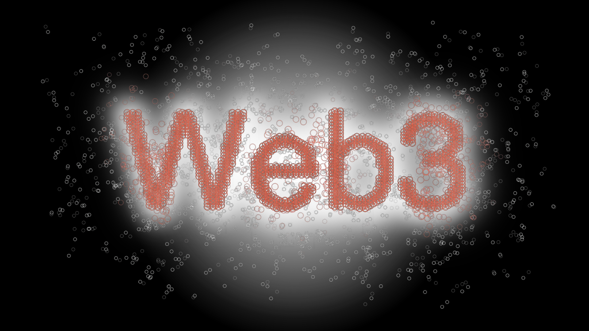
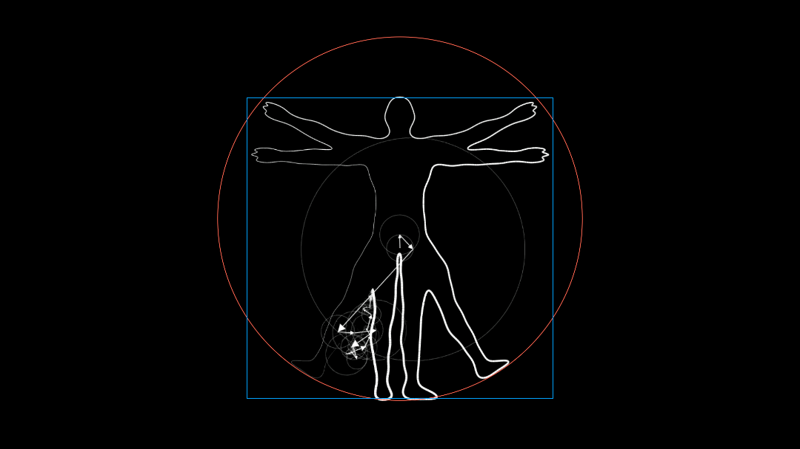

As most of us can feel by now, we are living through an unprecedented period in human history.
Never before have our collective challenges seemed more daunting.
And our dreams of a more beautiful world seemed more within reach.
Liminal Consulting
Decentralising Web3 Insights


As the era of centralisation is coming to an end, with our top-down control structures slowly but surely disintegrating under their own weight.

A new culture has emerged around the idea of Web3.
Seeking to direct this enormous potential towards a more beautiful and decentralised future.
Seeking to direct this enormous potential towards a more beautiful and decentralised future.

However, as of now, the understanding of how these decentralised technologies this collective genius is creating actually work remains centralised to a comparably small class of developers.
This constitutes one of the most crucial remaining bottlenecks for building a more resilient and decentralised future.
Vitalik put it best:
This constitutes one of the most crucial remaining bottlenecks for building a more resilient and decentralised future.
Vitalik put it best:
So, how do we address this issue?

The by far most effective means for spreading the light of understanding are visual metaphors.
Symbols that help people connect the dots and perceive the clarity behind the complexity.
Symbols that help people connect the dots and perceive the clarity behind the complexity.

A visual way of communicating ideas, much more fundamental than the many different languages spoken around the world today.

A universal language for a universal movement.
Not limited by superficial differences in location or cultural background.
But united by the greater cause of serving all of mankind.
Not limited by superficial differences in location or cultural background.
But united by the greater cause of serving all of mankind.

By upgrading our capacity to communicate these profound ideas with clarity, we can effectively widen the circle of understanding and thus unleash this movement's full potential in bringing about the more beautiful world our hearts know is possible.

If you are holding a piece of this puzzle that has the potential to change the world but as of now is not being widely understood as such:
I would love to help you communicate the unique innovation you are bringing into this space so it can naturally attract the minds and resources that will help you make it a reality.
I would love to help you communicate the unique innovation you are bringing into this space so it can naturally attract the minds and resources that will help you make it a reality.